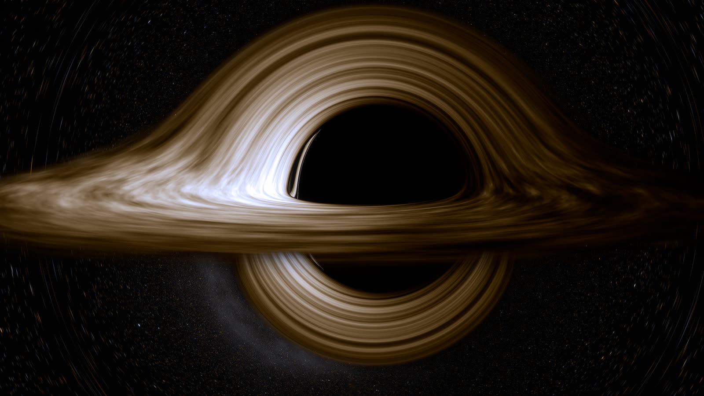
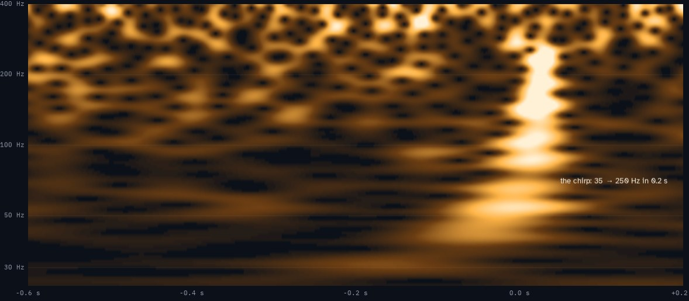

Two ways we know black holes are real: the first picture, made by a telescope the size of the Earth, and the first sound, heard by two detectors 3,000 km apart. Everything here is computed from general relativity and public data, and checked against exact results.

A 5½-minute narrated film, a live Kerr ray tracer you can spin and orbit, and a build-your-own Event Horizon Telescope with a working image reconstruction.
Open →
GW150914 found again in LIGO's raw public data with a from-scratch matched filter: listen to the chirp, explore the template bank, and see why it isn't noise.
Open →Written, coded and rendered by Claude (Anthropic) in October 2026. These are simulations and teaching analyses, not results of the Event Horizon Telescope or LIGO collaborations. Gravitational-wave data: the Gravitational Wave Open Science Center.